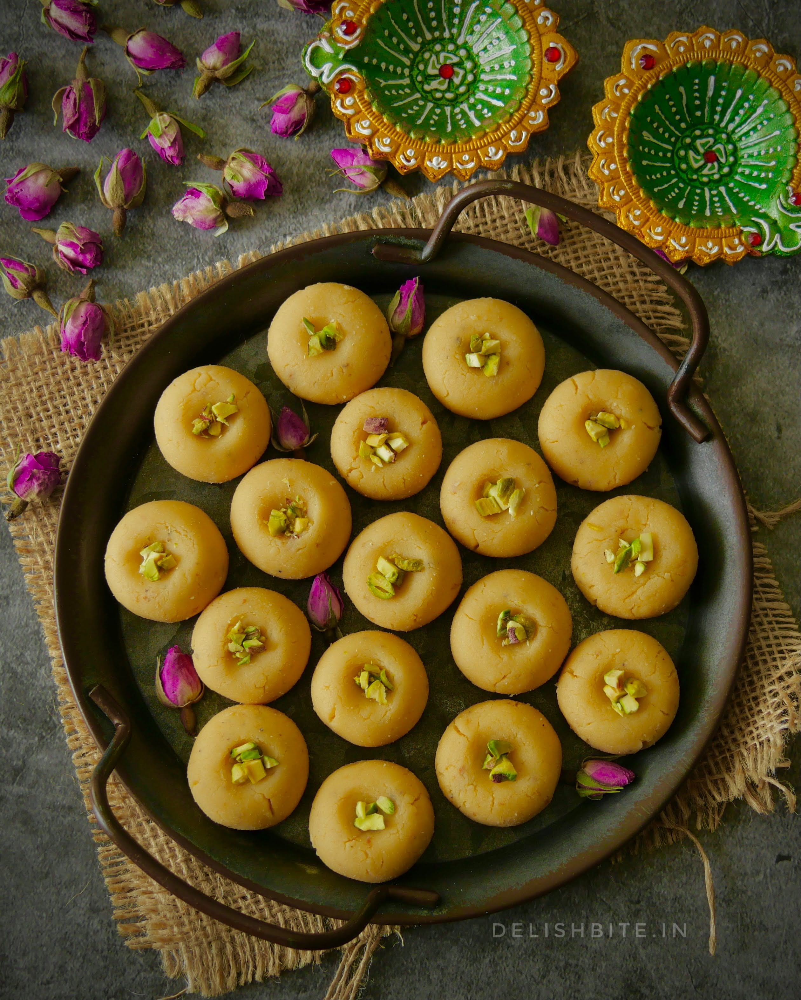
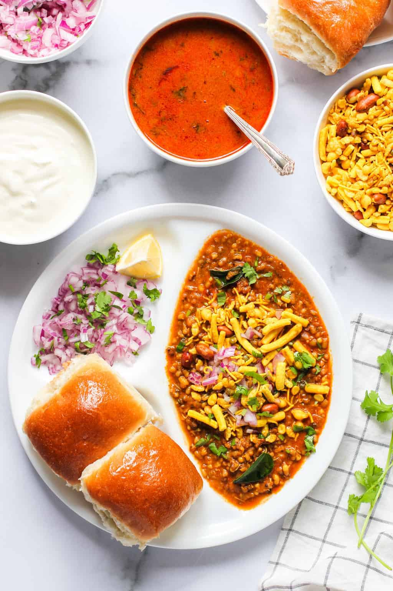
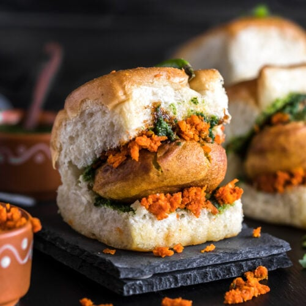
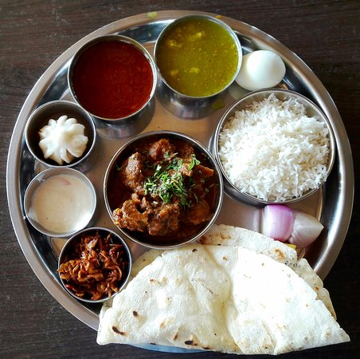
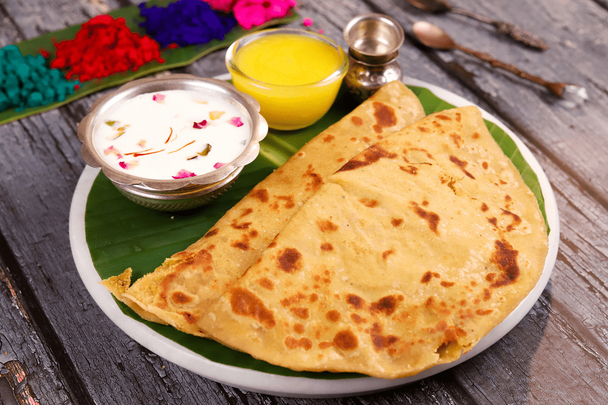

Kandi Pedha
A distinctive,milk-based sweet that's a local speciality.

A distinctive,milk-based sweet that's a local speciality.

Hot,Crispy,and often enjoyed with snacks.

A spicy sprouted bean curry,often served with bread,a must- try.

Popular potato fritters served in bread or on their own.

Traditional Maratha-style mutton curry paired with unleavened flatbread.

A sweet flatbread made from chana dal and jaggery, usual paired with a dollop of homemade ghee